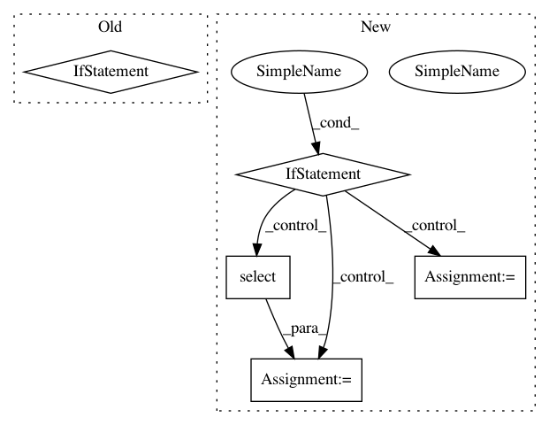

1048ebcfee561aaa44c3ac4a1f9da058335794bc,src/python/pants/java/nailgun_executor.py,NailgunExecutor,_await_socket,#NailgunExecutor#Any#,204
Before Change
// TODO: share the decreasing timeout logic here with NailgunProtocol.iter_chunks() by adding
// a method to pants.util.contextutil!
remaining_time = time.time() - (start_time + timeout)
if remaining_time > 0:
stderr = read_file(self._ng_stderr, binary_mode=True)
raise self.InitialNailgunConnectTimedOut(
timeout=timeout,
stdout=accumulated_stdout,
stderr=stderr,
)
readable, _, _ = select.select([ng_stdout], [], [], (-1 * remaining_time))
if readable:
line = ng_stdout.readline() // TODO: address deadlock risk here.
try:
After Change
stderr=stderr,
)
if PY3:
// NB: We use PollSelector, rather than the more efficient DefaultSelector, because
// DefaultSelector results in using the epoll() syscall on Linux, which does not work with
// regular text files like ng_stdout. See https://stackoverflow.com/a/8645770.
with selectors.PollSelector() as selector, \
safe_open(self._ng_stdout, "r") as ng_stdout:
selector.register(ng_stdout, selectors.EVENT_READ)
while 1:
remaining_time = calculate_remaining_time()
possibly_raise_timeout(remaining_time)
events = selector.select(timeout=-1 * remaining_time)
if events:
line = ng_stdout.readline() // TODO: address deadlock risk here.
try:
return self._NG_PORT_REGEX.match(line).group(1)
except AttributeError:
pass
accumulated_stdout += line
else:
with safe_open(self._ng_stdout, "r") as ng_stdout:
while 1:
remaining_time = calculate_remaining_time()
possibly_raise_timeout(remaining_time)
readable, _, _ = select.select([ng_stdout], [], [], (-1 * remaining_time))
if readable:
line = ng_stdout.readline() // TODO: address deadlock risk here.
try:
return self._NG_PORT_REGEX.match(line).group(1)
except AttributeError:
pass
accumulated_stdout += line
def _create_ngclient(self, port, stdout, stderr, stdin):
return NailgunClient(port=port, ins=stdin, out=stdout, err=stderr)
def ensure_connectable(self, nailgun):
In pattern: SUPERPATTERN
Frequency: 3
Non-data size: 5
Instances
Project Name: pantsbuild/pants
Commit Name: 1048ebcfee561aaa44c3ac4a1f9da058335794bc
Time: 2019-06-13
Author: ericarellano@me.com
File Name: src/python/pants/java/nailgun_executor.py
Class Name: NailgunExecutor
Method Name: _await_socket
Project Name: sahana/eden
Commit Name: ef2c9d1e1c83223c279faa8e2b1fe2df5219c7f9
Time: 2019-08-18
Author: fran@aidiq.com
File Name: modules/s3db/dc.py
Class Name: DataCollectionTemplateModel
Method Name: dc_question_onaccept
Project Name: sahana/eden
Commit Name: 3ae77833389609a2c958c745e47086ece9efef73
Time: 2020-03-30
Author: fran@aidiq.com
File Name: modules/s3/s3gis.py
Class Name: GIS
Method Name: set_config